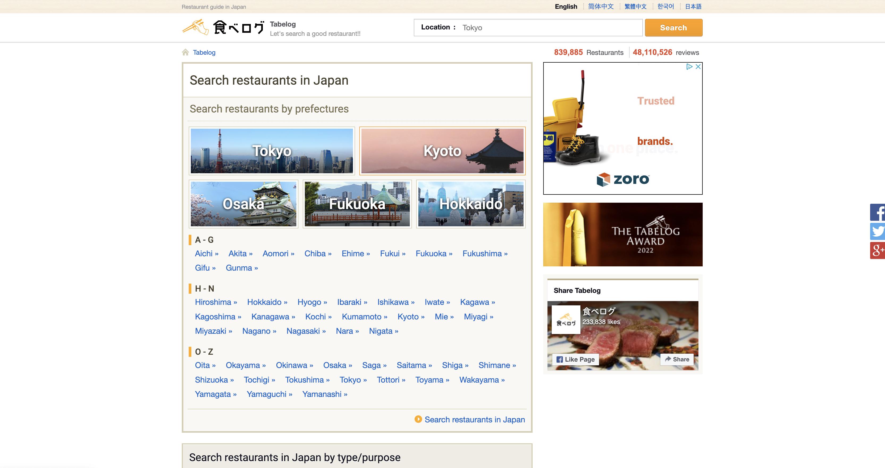
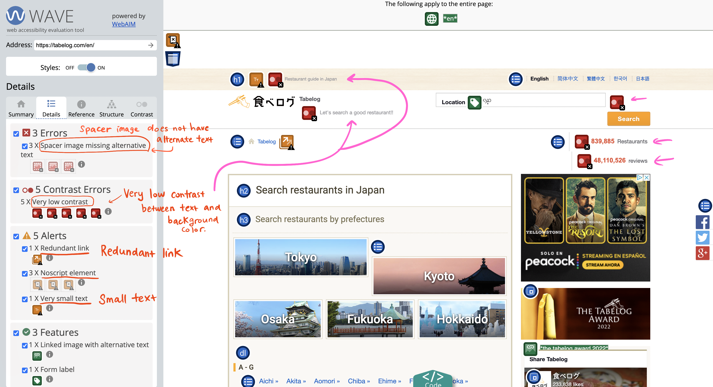
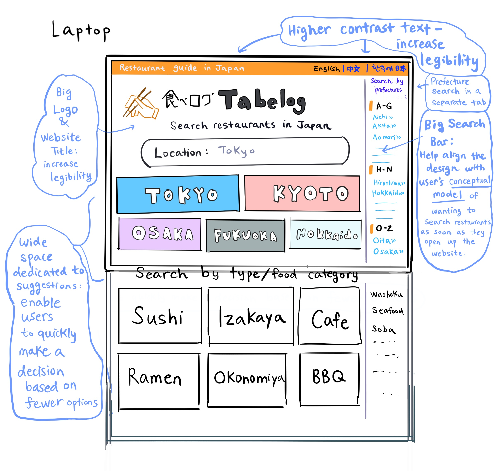
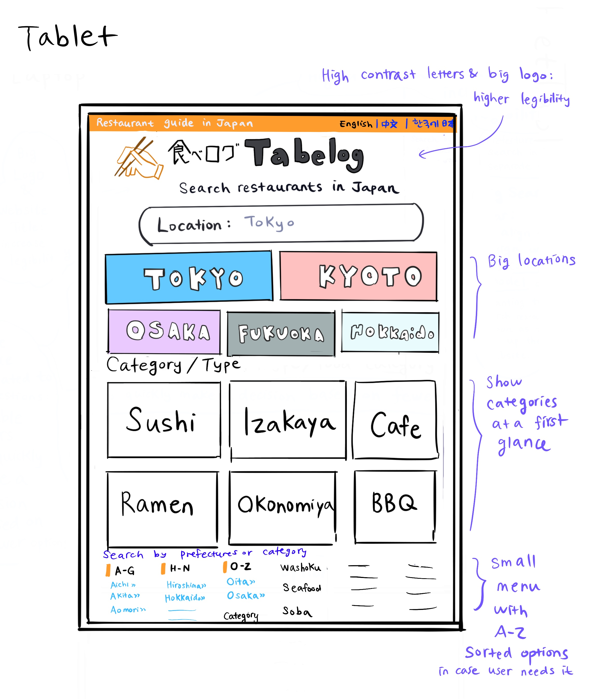
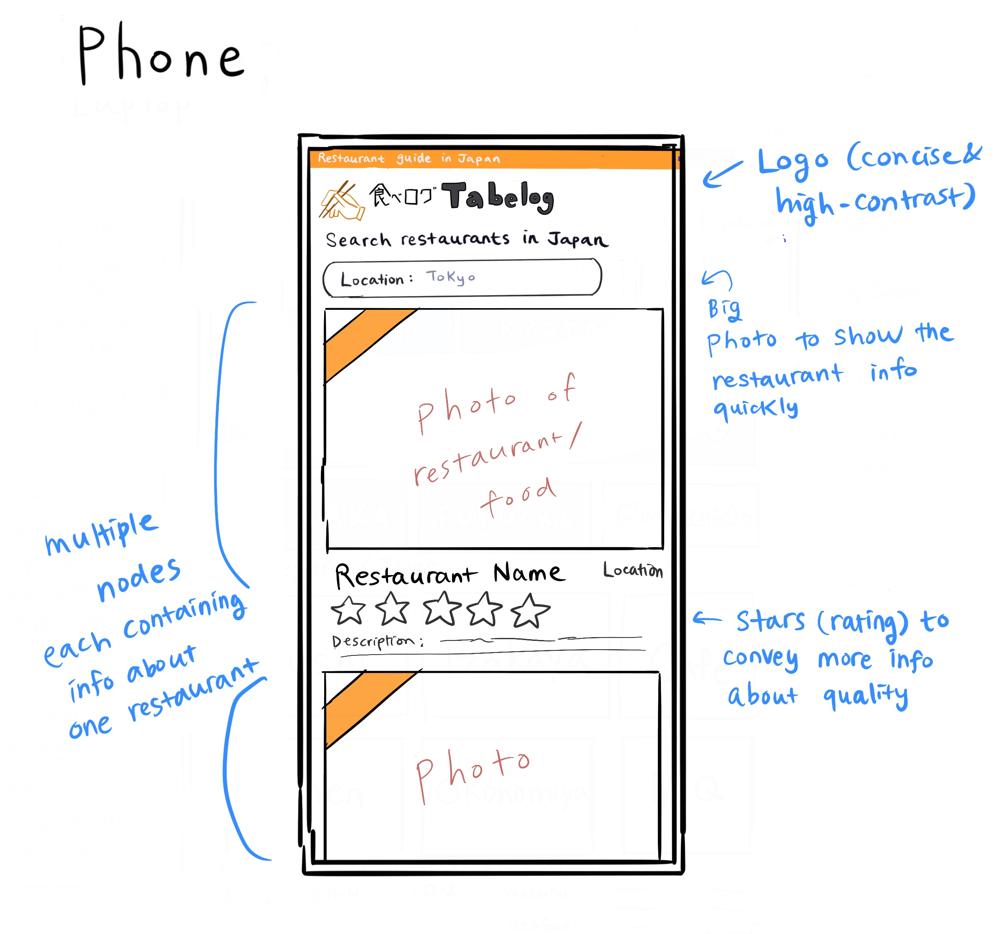
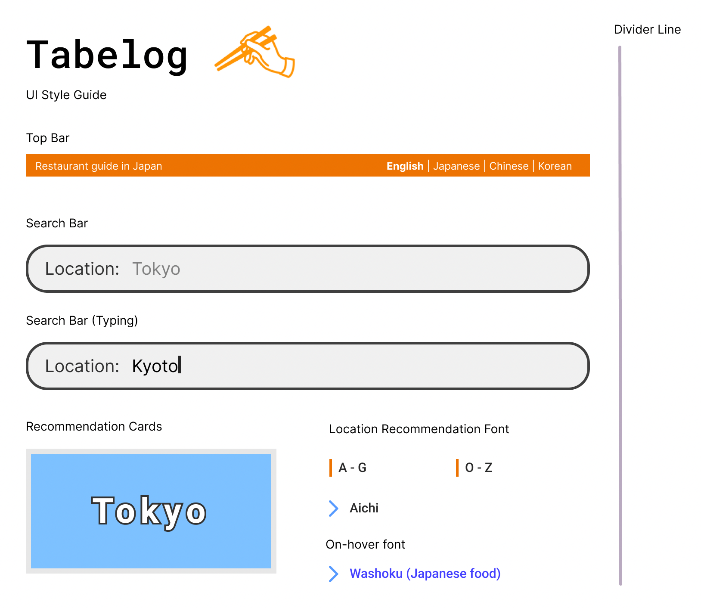
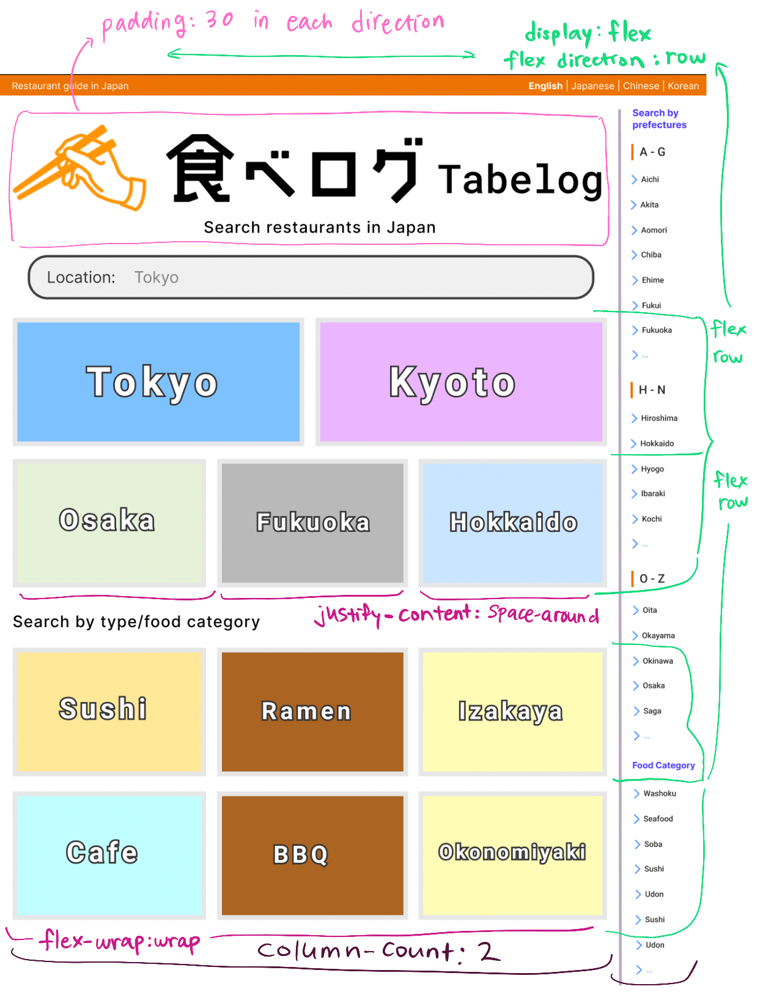
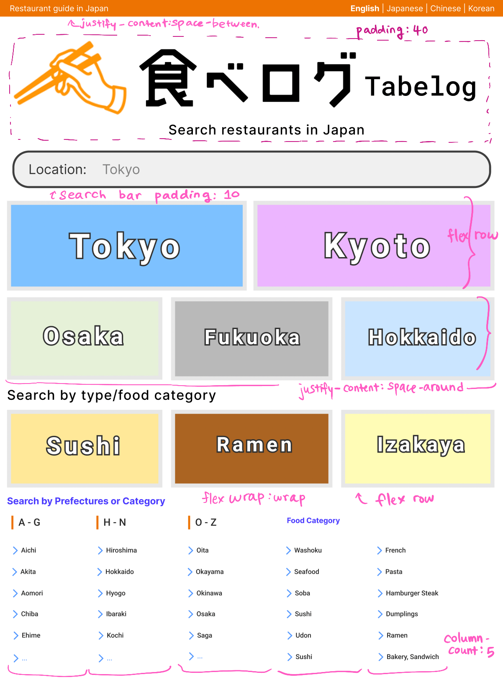
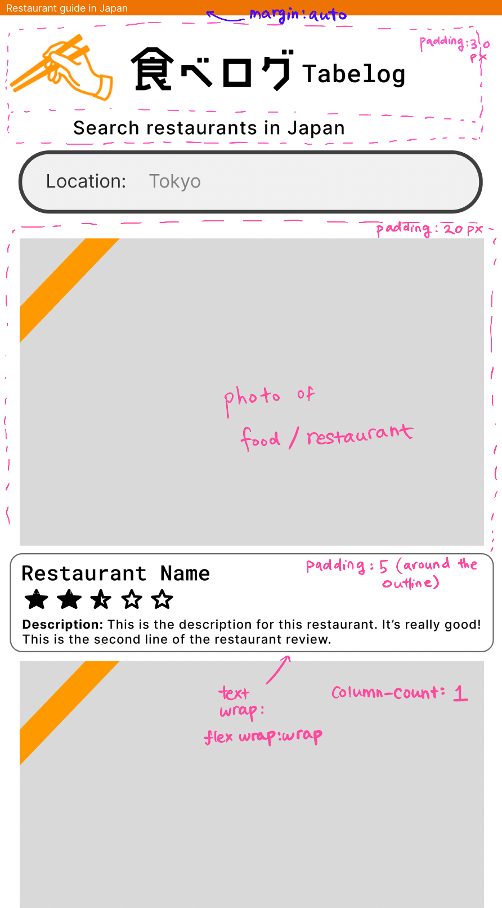
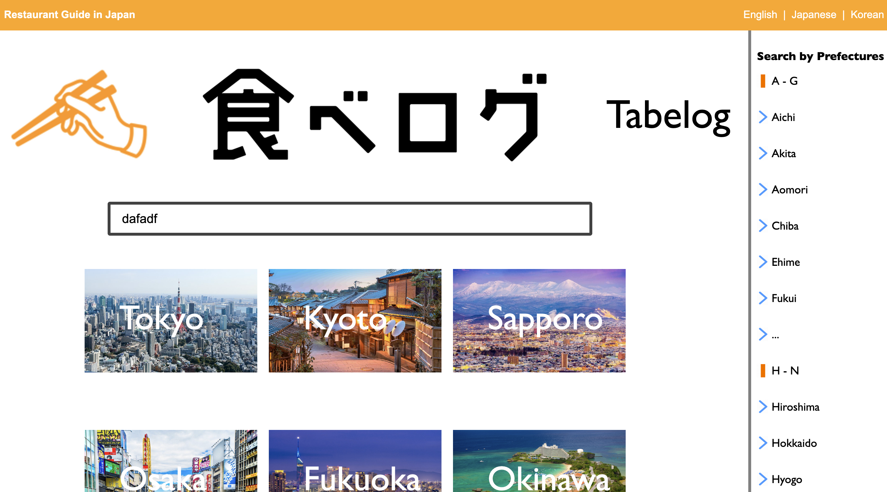

Responsive Redesign
For this assignment, Responsive Redesign, I chose a website that had accessibility or design problems and redesigned it in a responsive way.
Link to the Chosen Website
A screenshot of the page (on my laptop view):

Reason: I chose this website because I love Japanese food, and I love to search restaurants using this website,
but the design seemed that it could be improved with a clearer look and larger menu options.
Problems
- Usability/Efficiency: Relative to other elements of the page, the font sizes look very small. Because of this reason, the user does not immediately know where to press to start searching for restaurants in the immediate location that the user is in.
- Learnability: The user can learn that they have to search for restaurants using the top search bar or by clicking on individual links named after each location in Japan. Both of these options have problems:
- First, the location, size, and color of the search bar makes it hard to find, because the inside of the search bar is the same white color as the background, and the size of the bar is quite small and located at the top right.
- Second, for the main menu in the middle, the user has to look through individual prefectures to find the user’s exact location, and this can take quite some time.
- Memorability/Conceptual Model: The conceptual model that the user forms can be quite contradictory to this website interface. This is because the user expects that they can search up their own location right away as soon as they open up the website, but the interface forces the user to peruse through the outline of the website, learn how to use the website, and then finally search the location for restaurants.
Findings with Website Analyzer, WebAIM WAVE

One of the findings on WebAIM WAVE matched what I had discovered, which is that the website contains lots of low-contrast elements in terms of color.
Other findings included things like spacer images not containing alternate texts, which is bad for accessibility. There were also redundant links and very small texts.
Visual Redesign
Laptop (Low-fi)

Tablet (Low-fi)

Phone (Low-fi)

Visual Style Guide

Laptop (High-fi)

Tablet (High-fi)

Phone (High-fi)

Deployed Website
Link to the website
Screenshot of the completed website
